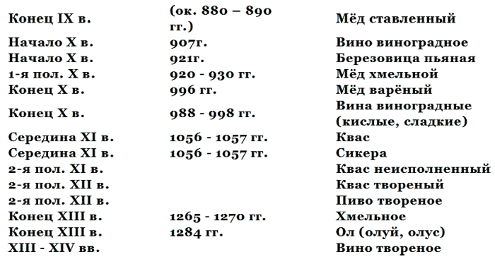

Что такое водка и ее история . Терминология .

Прежде чем начать рассмотрение терминологии спиртных напитков, существовавших в нашей стране с IX по XX век, следует со всей определённостью подчеркнуть, что научная точность и добросовестность требуют от нас не вносить наше сегодняшнее понимание значения определённых слов в язык предшествующих эпох и не впадать в заблуждение относительно слов, случайно имеющих одинаковое звучание или написание с современными словами, но обладавших в древности, или несколько веков тому назад, иным значением, чем ныне. Поэтому, чтобы не запутаться, разыскивая истоки происхождения спиртных напитков, чтобы точно понимать, что означало то или иное название, каково было его реальное содержание, мы будем толковать каждый термин применительно к разному времени. Вот почему одно и то же слово, одно и то же название, возможно, будет толковаться по нескольку раз, для каждого периода отдельно, и будет, разумеется, иметь несколько разных значений.
1. Что означает слово «водка», имеется ли оно в других древнеславянских языках и когда оно впервые зафиксировано в русском языке
1. Слово «водка», как и его современное значение «крепкий спиртной напиток», широко известно не только в нашей стране, но и за рубежом. В то же время мало кто знает его истинный смысл. Между тем выяснение подлинного характера слова и причин, по которым его первоначальное значение изменилось и перешло на спиртной напиток, может пролить свет на время происхождения водки и на уяснение её специфического характера, отличающего её как русский национальный спиртной напиток от всех других.
Итак, водка означает не что иное, как вода, но только в уменьшительной форме — диминутиве. Форма эта, а также слова в этой форме (за исключением личных имен) почти совершенно исчезли из современного русского языка. Они сохранились тем не менее в наиболее древних, вечных, никогда не умирающих словах вроде «папа» и «мама». «Папка, мамка» звучит сегодня, пожалуй, немного грубовато, но зато уж неподдельно по-народному. Точно так же должно звучать и слово «водка», хотя мы уже и не слышим в нём специфически ласково-грубоватого звучания, не воспринимаем его как уменьшительное от слово «вода», а смотрим как на совершенно самостоятельное слово. Кстати, «водка» (за исключением имен типа Валька, Петька) — редкий рудимент диминутива в нашей современной лексике, который сохранился только потому, что название это, превратившееся в термин, было придано «вечному» напитку, продолжавшему веками существовать и процветать в обществе.
Другое слово, относящееся к области пищевых продуктов, но не столь древнее, как «вода», а существовавшее в русском языке с конца Х века, — слово «овощ» утратило свой диминутив уже в начале XVIII века, так что словари последней четверти XVIII века вынуждены были объяснять, что «овощка» означает овощ небольших размеров[8].
Как видно из сопоставления слова мама — мам-ка, овощ — овощ-ка, вода — вод-ка, диминутив образуется путём непосредственного прибавления суффикса и окончания — ка к корню слова. Для слова «вода» сохранились и другие уменьшительные варианты с суффиксами — ич-, — оч-, — онь-: «водичка», «водонька», «водочка», причём последнее значение, как более близкое к «водке» в её современном понимании, стало также связываться со спиртным напитком, а не с водой.
Сам по себе факт, что название «водки»-напитка произошло от слова «вода» и, следовательно, каким-то образом связано по смыслу или содержанию с «водой», не вызывает никакого сомнения. И это весьма важно для установления того, в чём состоит специфика водки как спиртного напитка[9].
2. После вышесказанного читателю уже не покажется удивительным, что все этимологические словари русского языка не имеют в своём составе слова «водка», так как они объясняют только происхождение самостоятельных, первичных, коренных слов языка и не занимаются рассмотрением производных слов. Составители таких словарей, учёные-лингвисты, никогда не смотрели на слово «водка» исторически и не рассматривали его в современном значении, а подходили к нему только как к диминутиву слова «вода»[10]. Вот почему лингвисты не могут помочь нам теперь определить, когда же слово «водка» приобрело нынешнее, современное значение и под влиянием каких факторов это произошло.
3. Однако есть ещё толковые словари русского языка, объясняющие современное значение слов, имевших хождение в момент создания словаря. Что же говорят они о водке? Крупнейший и самый исчерпывающий из толковых словарей — словарь В.И. Даля, несмотря на всю свою обстоятельность, не включает слово «водка» как самостоятельное. А его нынешнее значение, как одно из многих частных значений, рассматривает в составе слова «вино»[11]. Но одновременно даёт и значение слова «водка» как «вода»[12]. Если учесть, что словарь Даля был составлен на лексическом материале до 60-х годов XIX века, то двойственное отношение составителя словаря к понятию «водка» означает, что слово «водка» до второй половины XIX века не было ещё широко распространено в значении алкогольного напитка, хотя и было уже известно и употребительно в народе.
Только в словарях, изданных в конце XIX — начале XX века, слово «водка» встречается как самостоятельное, отдельное слово и уже в своём единственном современном значении как «крепкий спиртной напиток».
4. Вместе с тем в региональных (областных) словарях, отражающих не столько общерусский словарный фонд, сколько местные, областные говоры и диалекты, слово «водка» упоминается только в одном значении — в древнем значении «воды» — и совершенно не известно в значении «спиртного напитка»[13]. Такие данные, зафиксированные в исчерпывающем своде всех русских говоров[14], датируются серединой XIX века (запись говоров в 1846 — 1853 гг.) и относятся к языку населения обширной территории к востоку и северу от Москвы (Владимирская, Костромская, Ярославская, Вятская и Архангельская губернии).
Это обстоятельство отчётливо указывает на то, что слово «водка» в значении «спиртного напитка» в середине XIX века имело распространение лишь в Москве, Московской губернии и в губерниях, принадлежавших к тогдашним так называемым «хлебным районам», где первоначально было развито винокурение, то есть в Курской, Орловской, Тамбовской и на Слободской Украине (Харьковщина, Сумщина).
Таким образом, уже на основе этих фактов совершенно ясно, что середина XIX века представляет собой некий рубеж, после которого слово «водка» в его нынешнем значении начинает делать первые шаги, распространяясь в русском языке за пределы Московского Центрального района, но ещё не достигая общерусского значения на всей территории России. Это, следовательно, может служить лишь указанием, что корни возникновения понятия «водка» в значении спиртного напитка надо искать по крайней мере где-то до середины XIX века, ибо 1860-е годы — это, так сказать, верхняя граница в возникновении нового термина, когда он уже окреп, установился и начал распространяться вширь. Но когда он впервые появился — следует выяснить и тем самым определить его нижнюю границу.
5. Обратимся теперь не к словарям современного русского языка, а к «Словарю старославянского языка», то есть языка, отражённого в многочисленных летописях IX — XIII веков[15]. Этот словарь, который составлен на основе тщательного изучения всех памятников старославянского языка, существовавших во всем славянском мире, то есть в Чехии, Моравии, Болгарии, Сербии, Польше, Белоруссии, Молдавии и Древней Руси, вообще ни в какой форме не включает слово «водка». При этом важно подчеркнуть, что этот словарь совершенно исключает какой-либо пропуск того или иного слова, ибо в его словнике и в картотеке, на основе которой он составлен, расписаны все слова из всех памятников IX — XIII веков и значительной части памятников XIV века, когда совершается постепенный переход от старославянского языка всех славян к славянским национальным языкам. Это говорит о том, что, по крайней мере, до XIV века слово «водка» как в значении воды, так и в значении спиртного напитка было абсолютно неизвестно, причём не только в России, но и во всем славянском мире.
Всё вышеизложенное даёт основание сделать следующие предварительные выводы:
1. Слово «водка» в значении «спиртного напитка» появляется в русском языке не раньше XIV и не позже середины XIX века, следовательно, оно возникло где-то между XIV и XIX веками.
2. В общеславянском языке, по крайней мере, до XII века, а может быть, и до XIV века не существовало слова «водка» в значении воды, то есть её диминутива. Следовательно, уменьшительное значение возникло в русском языке, когда он стал формироваться в национальный, когда в нём стали возникать оригинальные национальные окончания и суффиксы, то есть в XIII — XIV веках. Украинский же язык стал формироваться в национальный позднее — в XV веке, и в нём шли иные процессы, возникали иные суффиксы и окончания существительных. И в украинском, и особенно в польском языках, развивавшихся в соприкосновении с латинским и немецким, сказались иностранные влияния. Русский язык из-за татарского нашествия развивался изолированно, без иностранного влияния на него, поэтому русскому языку оказались свойственны совершенно иные формы.
Отсюда ясно, что слово «водка» (в любом значении и не зависимо от времени его появления) свойственно только русскому языку и является коренным русским словом, нигде более не встречаемым. Его появление в иных славянских языках может быть объяснено только позднейшими заимствованиями из русского (не ранее начала XVI в.).
3. Отсутствие в русском языке до XIV века слова «водка» в значении спиртного напитка в принципе ещё не говорит об отсутствии до этого времени у русского народа спиртных напитков, имеющих иную технологию и терминологию, или крепких спиртных напитков, подобных водке по технологии, но имеющих иные названия, иные термины.
Таким образом, нельзя абсолютно прямо связывать наличие в языке того или иного слова, термина и наличие продукта, отражающего современное значение данного термина. Этот продукт может существовать либо под другим термином, либо вовсе не существовать. И то и другое следует ещё доказать. Прежде всего надо уяснить, какие термины для обозначения спиртных напитков существовали в Древней Руси и что они реально обозначали.
2. Термины спиртных напитков, существовавшие в Древней Руси с IX по XIV век
В период между IX и XIV веками в Древней Руси существовали следующие термины для обозначения напитков: вода, сыта, березовица, вино, мёд, квас, сикера, ол. Большая часть этих напитков была алкогольными, охмеляющими. Безалкогольными являлись лишь первые два, то есть вода и сыта, в то время как третий — березовица — уже не был полностью безалкогольным, поскольку различали березовицу простую и березовицу пьяную. То же самое относилось и к квасу. Таким образом, грань между алкогольными и безалкогольными напитками была весьма подвижной. Даже сыта, то есть смесь воды и мёда, также легко могла забродить и тем самым превратиться в слабоалкогольный напиток, сохраняющий то же самое название, что и безалкогольный. Если же вспомнить, что и вино, то есть виноградное вино, привозимое из Византии и Крыма, точно так же разбавлялось по древнему греческому обычаю водой, то станет более понятным, почему вода оказалась тесно связанной с алкогольными напитками как постоянный компонент при их употреблении и почему вода входила в число именно напитков, а не была просто жидкостью для разных целей, какой она является в наши дни. Это отличие в восприятии воды древним человеком и нашими современниками, этот древнерусский взгляд на воду как основу многих или даже всех напитков и, конечно, всех алкогольных напитков надо иметь в виду, когда мы будем говорить о том, почему один из самых крепких алкогольных напитков русского народа — водка — был назван по имени столь безобидного питья, как вода.
Следует также иметь в виду, что напитком признавалась в IX — XI веках не всякая вода, а только вода «живая». Буквальное значение этого термина — проточная вода[16], то есть вода ключей, родников, источников и быстрых, прозрачных рек. Этот термин уже с XII века заменяется другим — «ключевая» или «родниковая вода», а в середине XIII века и вовсе исчезает из разговорного обиходного языка и остаётся лишь в сказках, где постепенно теряет своё реальное значение, которое забывается народом и переосмысливается целиком в сказочном, символическом духе (ср. «вода живая» и «вода мертвая»). Нет никакого сомнения, что к моменту появления водки древнее значение термина «живая вода» хотя и не употреблялось в быту, но всё же воспринималось сознанием и поэтому на Руси новый спиртной напиток не получил названия «воды жизни» и «живой воды», как это было всюду на Западе и у западных славян, испытавших латинское влияние. Именно в Западной Европе первые «водки», то есть винный спирт, содержащий половину или менее половины объёма воды, получил латинское название «аквавита» (aqua vitae — вода жизни), откуда произошли французское «о-де-ви» (eau-de-vie), английское виски (whisky), польское «оковита» (okowita), являвшиеся простой калькой латинского названия или его переводом на тот или иной национальный язык.
В русском языке этого не произошло, ибо практика производства водки имела не латинский, не западноевропейский, а иной источник — отчасти византийский и отчасти отечественный. Вот почему в терминологии русских спиртных напитков ни до ХIII века, ни после него аквавита не нашла никакого отражения. А сам термин «живая вода» на русском языке относился только к питьевой воде.
«Живую воду» называли ещё «пивная вода», то есть вода для питья, питьевая вода, а иногда и просто «пиво», что означало — питьё[17]. И эти названия ещё более сближали воду с другими питиями (напитками), в том числе и с подлинным пивом в нашем нынешнем понимании, ставили её хотя бы по названию как бы в один ряд с другими напитками[18]. Но, в то же время, вода была символом диаметральной противоположности алкогольным напиткам. Вот почему никому не приходило в голову называть крепкий спиртной напиток «живой водой», то есть поставить знак равенства между алкоголем и проточной водой. Вот почему водка получила своё первоначальное название не по аналогии с водой, а по аналогии с вином, этим древнейшим из охмеляющих напитков. Водка родилась и реально существовала, по-видимому, гораздо раньше, чем возникло её современное название. Этот вывод можно сделать уже на основе анализа терминологии напитков. Характерно, что водку называли в России вином очень долгое время, вплоть до начала XX века, когда за ней уже прочно закрепилось её нынешнее название. Следовательно, логично предположить, что она существовала под термином «вино» или, быть может, под каким-либо другим задолго до того, как за ней закрепилось название «водка».
Поэтому для выяснения этого вопроса крайне важно подробно проанализировать все термины спиртных напитков, существовавших до термина «водка», то есть ещё в Древней Руси, в Новгородской, Киевской и отчасти во Владимиро-Суздальской.
1. Вино. Под этим термином в IX — ХIII веках понималось только виноградное вино, если оно употреблялось без других прилагательных[19]. Вино стало известно на Руси с IX века, ещё до принятия христианства, а после принятия христианства, в конце Х века, оно стало обязательным ритуальным напитком[20]. Привозили вино из Византии и Малой Азии и называли греческим и сирским (сурьским), то есть сирийским. До середины XII века его употребляли только разбавленным водой, так же как его традиционно пили в Греции и Византии[21]. Источник указывает: «Месят воду в вино»[22], то есть воду доливать следует в вино, а не наоборот, не вино подливать в чашу с водой. Это имело глубокий смысл, ибо всегда более тяжёлые по удельному весу жидкости следует наливать в лёгкие. Так, чай надо наливать в молоко, а не наоборот. Сам термин «вино» был воспринят при переводе Евангелия на старославянский язык от латинского слова «винум» (vinum), а не от греческого «ойнос».
С середины XII века под вином подразумевают уже чистое виноградное вино, не разбавленное водой. В связи с этим, чтобы не делать ошибок, в старой и новой терминологии стали обязательно оговаривать все случаи, когда имелось в виду не чистое вино. «Еко же вкуси архитриклин (т.е. распорядитель пира) вина, бывшего от воды[23]». А чтобы избежать длинных оговорок, стали всё чаще употреблять прилагательные для уточнения, какое вино имеют в виду. Так появились термины «оцьтьно вино», то есть вино кислое, сухое[24]; «вино осмрьнено», то есть вино виноградное сладкое, с пряностями[25]; «вино церковное», то есть вино виноградное красное, высшего качества, десертное или сладкое, не разбавленное водой. Наконец, в конце XIII века, под 1273 годом, впервые в письменных источниках появляется термин «вино твореное»[26].
Ниже мы вернёмся к подробному рассмотрению этого термина, но здесь отметим, что он возникнет спустя почти 400 лет после появления вина виноградного и спустя 200 — 250 лет после письменного закреплёния разных эпитетов за разными видами виноградного вина. Уже одно это обстоятельство говорит о том, что здесь мы имеем дело не с виноградным, не с естественным вином, а с вином, полученным каким-то иным, искусственным, производственным путём, вином, сделанным, сотворённым самим человеком, а не природой.
Таким образом, термин «твореное вино» не относится уже к собственно вину, как его понимали до XIII века. Что это за «вино» и каково было его сырьё, мы рассмотрим ниже.
2. Мёд. Вторым по значению спиртным напитком Древней Руси был мёд. Он известен уже в глубокой древности и как сладость (лат. mel), и как алкогольный напиток (лат. mulsum). Мёд не был, как подчас думают, исключительно алкогольным напитком русских. Он служил основным парадным напитком большинства европейских народов средней полосы — между 40° и 60° с.ш. и встречался у древних германцев (Meth), у скандинавов (Miod), где считался напитком богов, и особенно у древних литовцев (medus). Основа слова «мёд» вовсе не русская, а индоевропейская. В греческом языке слово «мэду» означало «хмельной напиток», то есть общее понятие алкоголя, а иногда употреблялось в значении «чистое вино», то есть слишком крепкое, слишком опьяняющее, не питьевое по греческим традициям и представлениям. Слово же «мэдэе» означало по-гречески «пьянство»[27]. Всё это говорит о том, что крепость мёда, как алкогольного напитка, была во много раз больше, чем крепость виноградного вина и поэтому древние греки и византийцы считали, что употребление столь сильных напитков свойственно варварам. В Древней Руси, насколько это можно судить по фольклорным данным, мёд был самым распространённым напитком из числа алкогольных, в то время как вино в фольклоре почти не упоминается. Между тем документальные памятники говорят как будто о другом. Из них известно об употреблении привозного вина с IX века, но мёд впервые встречается на Руси, да и то в значении сладости, лишь под 1008 годом[28], а в Македонии — под 902 годом; в значении алкогольного напитка в Литве и Полоцке — в XI веке[29], в Болгарии — в XII веке, в Киевской Руси — только в XIII веке (1233 г.)[30], в Чехии и в Польше — с XVI века. Только в летописи Нестора под 996 годом упоминается, что Владимир Великий велел сварить 300 проварь меду[31]. Да ещё Ибн-Даст (Ибн-Рустам) — арабский путешественник в начале X века (921г.) упоминает, что руссы имеют хмельной медовый напиток[32] и что древляне в 946 году дают дань Ольге не пчелиным мёдом, а «питным». Вместе с тем из ряда косвенных византийских сообщений известно, что ещё в конце IX века, во времена язычества, отдельные славянские племена, особенно древляне и поляне, умели забраживать мёд и, после закисания, превращали его из mel в mulsum, а также выдерживали его подобно вину и использовали для улучшения качества такой приём, как переливы. (Этот древнейший приём широко применялся, например, в Закавказье вплоть до конца XIX века, как единственное средство улучшения и сохранения качества виноградных вин.)
Всё это даёт возможность прийти к следующим выводам: мёд, как алкогольный напиток, был вначале более всего распространён в самой лесистой части Древней Руси, на территории нынешней Белоруссии, в Полоцком княжестве, где процветало бортничество, то есть добыча мёда от диких пчёл. Отсюда мёд по Припяти и Днепру поступал в Киевскую Русь. В Х — XI веках мёд в Киеве употребляли в исключительных, чрезвычайных случаях и при этом изготовляли его сами из запасов медового сырья: мёд варили. Варёный мёд, как напиток, был более низкого качества по сравнению с мёдом ставленым. Последний выдерживали по 10-15 лет и более, и он представлял собой результат естественного (холодного) брожения пчелиного мёда с соком ягод (брусники, малины). Известны случаи, когда в XIV веке на княжеских пирах подавали мёд 35-летней выдержки. Поскольку широкое употребление мёдов (варёных и ставленных) приходится на XII — XV века, то представление о том, что в древности основным напитком был мёд, нашло отражение прежде всего в фольклоре, произведения которого создавали именно в это сравнительно позднее время, когда началось формирование национальной русской культуры.
Кроме того, расцвет медоварения в XIII — XV веках был связан не с его возникновением в это время (ибо оно возникло в Х — XI вв.), а с сокращением привоза греческого вина вследствие сначала монголо-татарского нашествия (XIII в.), а затем упадка и крушения Византийской империи (XV в.). Таким образом, историческая обстановка, включая не только изменения в системе международных отношений и международной торговли, но и изменения чисто географического характера (перемещение территории Русского государства на северо-восток, перенесение столицы из Киева во Владимир, а затем в Москву), приводила к изменению характера потребляемых спиртных напитков. Всё это удаляло Русь от источников виноградного вина и заставляло изыскивать местное сырьё и свои способы для производства алкогольных напитков.
Мёд, хотя и был древним напитком, но в XIII — XV веках он, как продукт местного сырья, выдвигается на первый план главным образом в обиходе знати, зажиточных слоёв. Длительность производства хорошего, настоящего ставленного мёда ограничивала круг его потребителей, несомненно, удорожала товар. Для массовых сборищ, даже при дворе великого князя, употребляли более дешёвый, более быстро приготавливаемый и более пьянящий — варёный мёд. Тем самым XIII век является рубежом, знаменующим переход к напиткам, во-первых, из местного сырья и, во-вторых, к напиткам значительно более крепким, чем в предыдущие пять столетий.
Нет сомнений, что привычка к употреблению более крепких, более охмеляющих напитков в XIII — XV веках подготовила почву и для появления водки.
В то же время развитое, широкое медоварение было просто невозможно без наличия винного спирта, как компонента дешёвых, но крепких мёдов. Уже в XV веке запасы мёда сильно сокращаются, он дорожает в цене и потому становится предметом экспорта за счёт сокращения внутреннего потребления, ибо находит спрос в Западной Европе[33].
Для местного же употребления приходится изыскивать более дешёвое и более распространённое сырьё. Таким сырьём оказывается ржаное зерно, уже с древнейших времён используемое для производства такого напитка, как квас.
3. Квас. Слово это встречается в древнерусских памятниках одновременно с упоминанием о вине, и даже раньше мёда. Значение его, однако, не вполне соответствует современному. Под 1056 годом мы находим явное упоминание кваса как алкогольного напитка[34], поскольку на языке того времени слово «квасник» употребляли в значении «пьяница»[35].
В XI веке квас варили, как и мёд, а это означает, что по своему характеру он был ближе всего к пиву, в современном понимании этого слова, но только был гуще и действовал более охмеляюще.
Позднее, в XII веке, стали различать квас как кислый слабоалкогольный напиток и квас как сильно опьяняющий напиток. Оба они, однако, носили одинаковые названия, и только по контексту иногда можно догадаться, о каком виде кваса идёт речь. По-видимому, во второй половине XII века или в самом конце XII века сильно опьяняющий квас стали называть творёным квасом, то есть сваренным, специально сделанным, а не произвольно закисшим, как обычный квас[36].
Этот твореный квас считался таким же крепким алкогольным напитком, как чистое вино, их приравнивали по крепости. «Вина и творена кваса не имать пити»[37], — говорится в одном из церковных предписаний. «Горе квас гонящим», — читаем в другом источнике[38], и это ясно указывает на то, что речь идёт не о безобидном напитке. Из всех разновидностей твореного кваса самым опьяняющим, самым «крепким», дурманящим был «квас неисполненный», который весьма часто сопровождается эпитетом «погибельный»[39]. На старославянском языке слово «неисплънены» означало незавершённый, не полностью готовый, не доведённый до конца, плохого качества (противоположный латинскому perfect)[40]. Таким образом, речь, вероятно, шла о недоброженном или плохо перегнанном продукте, который содержал значительную долю сивушных масел. По-видимому, к этому роду кваса относилась и редко встречающаяся в источниках «кисера» — сильно одуряющий напиток. Если учесть, что слово «квас» означало «кислое» и его иногда именовали квасина, кислина, кисель, то слово «кисера» можно рассматривать как пренебрежительную форму от кваса неисполненного, незавершенного, испорченного, плохого. Но есть указания и на то, что кисера — искажение слова «сикера», так же означающего один из древних алкогольных напитков.
4. Сикера. Слово это вышло из употребления в русском языке, причём из активного бытового языка, как раз в XIV — XV веках, на том самом рубеже, когда произошла смена и в терминологии, и в существе производства русских алкогольных напитков. Поскольку слово это исчезло из языка совершенно бесследно, не оставив никакой замены, аналога или иного лексического рудимента, то мы постараемся как можно тщательнее выяснить его значение и первоначальный смысл, ибо оно проливает свет на историю русских спиртных напитков.
Слово «сикера» вошло в древнерусский язык из Библии и Евангелия, где оно упоминалось без перевода, так как переводчики в конце IX века затруднялись подыскать ему эквивалент в славянских языках, в том числе и в древнерусском языке.
Оно было употреблено и понималось как первое общее обозначение алкогольных напитков вообще, но в то же время чётко отделялось от виноградного вина. «Вина и сикеры не имать пити»[41]. В греческом языке, с которого переводили Евангелие, «сикера» так же означала искусственный «хмельной напиток» вообще, причём любой пьянящий напиток, кроме естественного вина[42]. Однако источником этого слова послужили слова на древнееврейском и арамейском языках — «шекар» «шехар» и «шикра».
Шикра (sikra) на арамейском означало род пива, это слово и дало «сикеру»[43]. Шекар (Schekar) на древнееврейском — «всякий пьяный напиток, кроме лозного вина»[44]. Это слово дало в русском «сикер». Поэтому в одних источниках встречается «сикера», в других — «сикер». Совпадение обоих этих слов по звучанию и очень близких по значению привело к тому, что даже лингвисты считали их за вариации одного и того же слова. Однако это были не только разные слова, но они означали и разные понятия с технологической точки зрения.
Дело в том, что в Палестине и у греков «сикер», изготовляемый из плодов финиковой пальмы, был, по сути дела, финиковой водкой. Арамейское же понятие «сикера» означало хмельной, опьяняющий напиток, по технологии близкий к медо — или пивоварению, без гонки.
Нет сомнения, что в древнерусских монастырях учёные монахи доискивались до подлинного значения упоминаемых в Библии и Евангелии греческих, арамейских и древнееврейских слов и тем самым получали полное представление о технологических процессах и их отличиях.
5. Пиво. Помимо перечисленных выше алкогольных напитков — вина, мёда, кваса и сикеры — в источниках XI — XII 1 веков весьма часто упоминается и пиво. Однако из текстов того времени видно, что пиво первоначально означало всякое питьё, напиток вообще, а вовсе не рассматривалось как алкогольный напиток определённого вида в современном нашем понимании. «Благослави пищу нашу и пиво», — читаем в памятнике XI века[45]. Позднее, однако, появляется термин «твореное пиво», то есть напиток, питьё, специально сваренное, сотворённое, как вино. Твореным пивом, как видно из источников[46], называли очень часто сикеру, а иногда и другой напиток — ол. Таким образом, термин «пиво» сохранил свой широкий смысл и до XII — XIII веков. Если в Х — XI веках так называли всякий напиток, всякое питьё, то в XII — XIII веках так стали называть всякий алкогольный напиток: сикеру, квас, ол, твореное вино — всё это было в целом твореное пиво или искусственно созданное самим человеком алкогольное питьё. Пиво в современном понимании имело другой термин, другое обозначение — ол.
6. Ол. В середине XIII века впервые появляется новый термин для обозначения ещё одного алкогольного напитка — «ол»[47], или «олус». Есть также данные, что в XII веке зафиксировано название «олуй»[48], что, по всей видимости, означало то же самое, что и «ол». Судя по скупому описанию источников, под олом понимали напиток, подобный современному пиву, но только приготавливали это пиво-ол не просто из ячменя, а с добавлением хмеля и полыни, то есть трав, зелий. Поэтому иногда ол называли зелием, зельем. Имеются также указания на то, что ол варили (а не гнали, как сикеру или квас), и это ещё более подтверждает, что ол был напитком, напоминающим современное пиво, но только сдобренное травами. Его наименование напоминает английский эль, также приготавливаемый из ячменя с травами (например, с добавлением цветов вереска). То, что позднее ол стали отождествлять с корчажным пивом, ещё более подтверждает, что олом в XII — XIII веках называли напиток, подобный пивному в современном понимании этого слова.
Вместе с тем ясно, что термин «ол» давали весьма высококачественному и довольно крепкому и благородному напитку, ибо в конце XIII века в «Номоканоне» указывается, что ол может быть принесен в храм «в вина место», то есть может быть полноценной заменой церковного, виноградного вина. Ни один из других видов напитков того времени не пользовался этой привилегией — заменять собой вино[49].
7. Березовица пьяная. Этот термин отсутствует в письменных памятниках старославянского языка, но из сообщений арабского путешественника Ибн-Фадлана, посетившего Русь в 921 году, известно, что славяне употребляли березовицу пьяную, то есть самопроизвольно забродивший сок березы, сохраняемый долгое время в открытых бочках и действующий после забраживания опьяняюще[50].
Анализ терминологии спиртных напитков IX — XIV веков даёт основание сделать следующие выводы:
В раннюю историческую эпоху на Руси существовало пять типов опьяняющих напитков:
1. Напитки, получаемые из Византии и стран Средиземноморья в готовом виде и являвшиеся виноградным вином, преимущественно красным. Все виды вина называли до XIII века исключительно просто вином, иногда с прилагательным «кислое» и «осмърьнено» (сладкое, десертное, пряное).
2. Напитки, получаемые путём естественного сбраживания местных продуктов природы — берёзового сока, мёда, сока ягод без всякого дополнительного воздействия человека (т.е. без добавления дрожжей, без варки и т. п.), — березовица пьяная, мёд ставленный.
3. Напитки, получаемые путём искусственного сбраживания зерновых продуктов (ржи, ячменя, овса) после варки (кипячения) сусла и с добавлением дополнительных трав (хмеля, зверобоя, полыни) для придания запаха и вкуса. Этими напитками являлись квас (означавший современное пиво), ол (крепкое, густое пиво типа портера).
4. Напитки, получаемые путём искусственного сбраживания мёда или путём комбинации искусственно сброженно-го мёда с продуктами искусственно сброженного зерна. Этим напитком был мёд варёный или питный мёд. Он представлял собой водный раствор мёда, заправленный ячменным или ржаным солодом и сдобренный различными травами (хмелем, полынью, зверобоем) и сваренный подобно пивным напиткам. Крепость этого алкогольного напитка была довольно высокой, а опьяняющее воздействие — сильным, поскольку медовое сусло было чрезвычайно богато сахаром, и поэтому напиток оказывался более богатым спиртом, чем ол.
5. Напитки, получаемые путём гонки сброженных зерновых продуктов. К этим напиткам относились: квас твореный, вино твореное, сикера, квас неисполненный. По всей видимости, все перечисленные термины означали один напиток, называемый по-разному в различных источниках именно потому, что он был, во-первых, самым новым для XII — XIII веков напитком, появившимся после всех вышеперечисленных, и термин для его обозначения только подбирали по аналогии со старыми терминами, обозначавшими известные уже алкогольные напитки, а во-вторых, потому, что сырьё для этого нового напитка использовали разное (хотя получался он по действию одинаковым), а люди привыкли определять продукт по сырью, а не по результату производства. То, что это был один и тот же напиток, показывает его единый эпитет — «твореный», что указывает на единство технологии. По-видимому, здесь речь идёт о первичном получении хлебного спирта в результате отгонки сильно осахаренного крахмалистого сырья.
6. Таким образом, обзор терминологии даёт возможность установить наличие таких технологических процессов, как медостав, медоварение, квасо-пивоварение и некое, ещё неясное, винотворение (т.е. нечто близкое к винокурению, но технически несовершенное).
3. Терминология русских спиртных напитков в XIV — XV веках
Выше мы рассматривали термины, обозначавшие спиртные напитки в источниках в основном до ХIII века включительно, хотя учитывали также словарный состав основных письменных памятников и XIV — XV веков. Однако надо иметь в виду, что от этого времени фактически не осталось памятников бытового языка, а зафиксированный лексический состав старославянского, церковного языка, как раз в момент его фиксации, подвергали чистке от бытовизмов и потому не может полностью отражать всю лексику, которая имела фактически место в то время.
Это обстоятельство надо иметь в виду, особенно в связи с тем, что исторически именно конец XIV — начало XV века представляет собой переломный период для России, как в государственном, политическом, экономическом, производственно-техническом отношениях, так и в бытовом, языковом, лексическом, не только потому, что живой старославянский язык исчезает и появляются национальные славянские языки, но и потому, что новое время, новые связи с зарубежным миром (в результате создания московского государства, ликвидации татарского ига), новые производства (ремёсла) и новые привозные товары не могли не вызвать новых явлений в языке, не могли не повлиять на возникновение новых обозначений, новых понятий.
Хотя в этот период не возникает принципиально новых слов для обозначения алкогольных напитков, однако заметно изменение в частоте ранее употреблявшихся терминов. Всё шире и чаще для общего обозначения спиртных напитков употребляют термин «хмельное».
Ещё в договорной грамоте Новгорода с великим князем Тверским Ярославом Ярославовичем от 1265 года, в самом древнем из сохранившихся документов на русском языке, сказано о таможенной пошлине с каждого «хмельна короба»[51], то есть с каждой единицы объёма алкогольных напитков. Короб — это большой туес, может быть, лубяная бочка таких больших размеров, которые соответствуют возу, ибо её только одну можно поместить на воз. На эту мысль наталкивает выдержка из этого же текста, в которой говорится, что пошлина в «три векши» взимается с каждой «лодьи, воза и хмельна короба», то есть с примерно одинаковых объёмов мерных, сыпучих и жидких тел.
Какое «хмельное» можно измерять возами или коробами? По-видимому, не благородный и дорогой ставленный мёд, а, скорее, мёд дешёвый и низкосортный — типа пива, то есть варёный. Об этом говорит грамота Новгорода и Твери от 1270 года, где указывается, что тверской князь обязан послать в Ладогу казённого «медовара»[52], а также то, что для крепких напитков общим термином становится для того времени всё чаще слово «мёд», хотя, по-видимому, не всегда речь может идти о собственно старинном ставленном мёде. Последний в таких случаях называют мёдом царским, или боярским.
Термин «мёд» ещё чаще встречается в памятниках XIV — XV веков, причём в XV под ним подразумевается очень крепкий и хмельной напиток, рассчитанный на массового потребителя (войско). Этот мёд и получает синонимы «хмельного», «хмеля», потому что его в сильной степени сдабривали хмелем, и в то же время обладает «крепостью» от сивушных масел, но приписываемой хмелю, ибо чем больше было сивухи, тем больше приходилось класть хмеля, чтобы забить её запах. Именно в эту эпоху «хмельному» всё более придается и другой термин — «зелье», то есть напиток, сдобренный травами, когда наряду с хмелем кладется полынь. А сам термин «зелье», или «крепкое зелье», постепенно приобретает иной смысл: «злой» хмельной напиток, опьяняющее питьё, о котором говорят с известной долей презрения — из-за его низкого качества. Само опьянение начинает приобретать, по-видимому, иной характер: из веселья оно превращается в потерю смысла, в пагубу. Так, например, летописец не может пройти мимо такого факта, как пагубное воздействие «нового опьянения» на важные поступки, действия людей, на общество. Он рисует сдачу Москвы хану Тохтамышу как происшедшую в значительной степени из-за пьянства в осажденном городе в ночь с 23 на 24 августа 1382 года, причём это пьянство сопровождалось поразительным и непонятным безрассудством. При осаде «одни молились, а другие вытащили из погребов боярские меды и начали их пить. Хмель ободрил их, и они полезли на стены задирать татар». После двухдневного пьянства жители так осмелели, что отворили ворота татарам, поверив их обещаниям. Результатом было полное разорение и разграбление Москвы[53].
В 1433 году Василий Тёмный был наголову разбит и пленён небольшим войском своего дяди Юрия Звенигородского на Клязьме, в 20 верстах от Москвы, только потому, как говорит летописец, что «от москвыч не бысть некоея же помощи, мнози бо от них пияни бяху, а и с собой мёд везяху, чтоб пити ещё»[54].
Таким образом, совершенно ясно, что в XIV — XV веках происходят какие-то весьма существенные изменения в характере производства хмельных напитков, и отсюда сам характер, сам состав этих напитков значительно меняется: они действуют более опьяняюще и, главное, одурманивающе.
Известно, что в 1386 году генуэзское посольство, следовавшее из Кафы (Феодосия) в Литву, привезло с собой аквавиту[55], изобретённую алхимиками Прованса в 1333 — 1334 годах и ставшую известной на юге Франции и в северной части Италии, прилегающей к французской территории[56].
С этим крепким напитком ознакомили и царский двор, однако его признали чрезвычайно крепким и возможным для употребления лишь как лекарство и исключительно разбавленным водой. Вполне вероятно, что идея разводить винный спирт водой и дала с этого времени начало русской модификации водки, по крайней мере, как термину, как наименованию. Однако, возможно, был и другой путь: водка технологически выросла, вполне вероятно, из сикеры и из квасогонения, а отчасти и из медоварения в том виде, каким оно сформировалось к ХIII — XIV векам.
Чтобы выяснить этот вопрос, обратимся к рассмотрению технологии тех напитков, терминологию которых мы уже определили выше. Но прежде чем перейти к этому, кратко проведём точную хронологию возникновения всех спиртных напитков с IX по XV век.
4. Первое упоминание в письменных источниках алкогольных напитков или их терминов в Древней Руси IX — XIV веков
Хронологическая таблица

Из этой краткой таблицы, подытоживающей весь предыдущий историко-лингвистический анализ терминологии алкогольных напитков, следуют два основных вывода.
1. Изначальными, первыми по времени и доминирующими в течение всего периода Древней Руси (IX — XIV вв.), являются алкогольные напитки, сырьём для которых служили дары природы: берёзовый сок, виноград, мёд. Среди них виноград и произведённое из него вино были целиком иностранного происхождения, и употребляли это вино только в высших социальных слоях феодального общества или в ритуальных (религиозных) целях. Однако оно служило своеобразным эквивалентом алкогольных напитков и по силе воздействия, и по терминологии. Оно было «золотой серединой», эталоном. Слабее вина были слабоалкогольные напитки вроде березовицы, пивного кваса, сыченого медка. Сильнее вина были березовица пьяная, квас-сикера, ол, мёд ставленный и мёд варёный. Тот факт, что мёд и берёзовый сок были первыми русскими естественными полуфабрикатами для производства вина, с которыми не было необходимости производить сложные технологические манипуляции, а достаточно было дать естественно забродить, обусловил такую особенность русского производства спиртных напитков на весьма долгий период, как экстенсивность технологии и использования сырья.
2. Только со второй половины XI века, а может быть, и с конца этого столетия и начала XII века можно говорить о развитии производства алкогольных напитков из иных полуфабрикатов, чем мёд, а именно из зерна злаковых растений. Это производство, несомненно, родилось как побочная и случайная ветвь хлебопечения и было тесно связано с разделением церквей на православную и католическую и в связи с этим со спором об евхаристии (т.е. о применении либо только пресного или только дрожжевого, «квасного», хлеба для причастия)[57].
Производство это, давшее в XII — XIII веках такие напитки, как пиво и ол, получило особый толчок для своего дальнейшего расширения вследствие монголо-татарского нашествия, изоляции Руси от Византии, перенесения русского политического центра в район бассейна Оки и Верхней Волги, где основным пищевым сырьём были рожь, овес, ячмень, мёд. Разрешение замены вина в церковном ритуале пивом, олом было результатом отсутствия настоящего виноградного вина и в связи с этим санкционированием со стороны церкви и государства производства алкогольных напитков из хлебного сырья.
Появление в конце XIII — начале XIV века таких терминов, как «хмельное», «вино твореное», обозначающих алкогольные напитки вообще, говорит о крайней нечёткости алкогольного стандарта этих напитков, об отсутствии у них твёрдого, прочного, определённого наименования и наличии лишь одного общего признака — употребление при их производстве хмеля, а также сопоставление их по крепости с не разведённым водой вином.
Тот факт, что вином твореным называли все алкогольные напитки (ол, пиво, квас неисполненный), кроме мёда, ещё более подчёркивает наличие процесса создания алкогольного напитка на немедовой базе, то есть на хлебной. Именно этот напиток, общего единого названия которого ещё в XIII — XIV веках не существовало, называли хмельным, ибо все его разновидности и модификации требовали употребления хмеля. В случае же использования хмеля при производстве варёного мёда такой мёд называли не просто «хмельным», а «хмельным мёдом». Таким образом, мёд остаётся единственным из старых, древних терминов алкогольных напитков, не объединяемых и не смешиваемых с более поздними. Это ещё раз объясняет тот факт, что «мёд» как термин хорошо представлен в фольклоре и что этот термин связан с глубокой древностью, хотя на самом деле его фиксация относится к тому же XIV и даже XV веку.
Другой излюбленный фольклорный термин — «зелено вино» в письменных источниках абсолютно не встречается, что может быть объяснено двояко: во-первых, как метонимия слова «хмельное» («зелено» не значит зелёное, а зельено, то есть сдобренное зельем, травами, хмелем, зверобоем и т. д.). Даже слово «ол» («olus» означало по латыни «трава», «зелье») — отголосок общего термина «хмельное»; во-вторых, как более поздняя, относящаяся к XVII — XVIII векам, визуальная характеристика плохого самогона, имеющего зеленоватый, мутный оттенок. При этом первое объяснение, по-видимому, более правильно. Тот факт, что термин «зелено вино» появляется в тех пластах фольклора, которые относятся никак не раньше, чем к XV — XVI векам, говорит о том, что сам термин не мог возникнуть раньше этого времени. Он явно применяем к хлебному вину, а не к мёду и тем самым косвенно указывает на то, что XV век был действительно переломным в смысле полного перехода от прежних, древних алкогольных напитков, терминологию которых мы рассмотрели, к новым — к хлебному спирту.
Итак, обзор терминологии и хронологии её появления и применения показывает, что с IX и до XIII века бытовали довольно стабильно три-четыре термина (мёд, вино, квас, березовица), значение которых за этот период менялось незначительно, хотя и происходило их уточнение и появление новых нюансов в терминологии. В XIII — XIV веках появляются новые термины алкогольных напитков. Вместе с тем, по данным историко-экономического характера, к XV веку сокращается старое, древнее сырьё — мёд для производства алкогольного мёда. Всё это говорит о наличии в XIV — XV веках перелома в производстве спиртных напитков. Если же учесть, что в 1386 году русские ознакомились с виноградным спиртом, ввезенным из Кафы (генуэзской колонии в Крыму), то и этот факт конца XIV века также подтверждает, что данный исторический период был во всех отношениях новым, отличающимся от предшествующего, и это оказало влияние на изменение и сырья и технологии производства русских алкогольных напитков. Однако поскольку все эти данные носят косвенный характер, то весьма важно посмотреть, нет ли прямых данных, говорящих об изменении технологии производства. Для этого необходимо сделать обзор тех сведений, которые известны нам, о технологии производства алкогольных напитков до XV века.